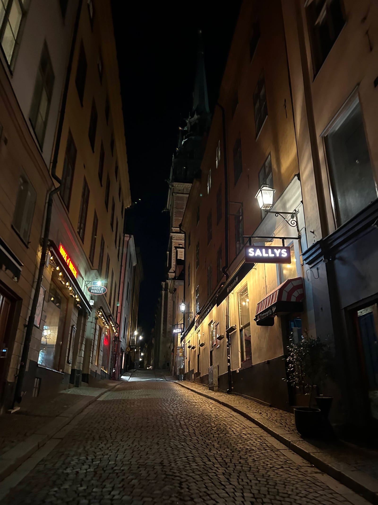
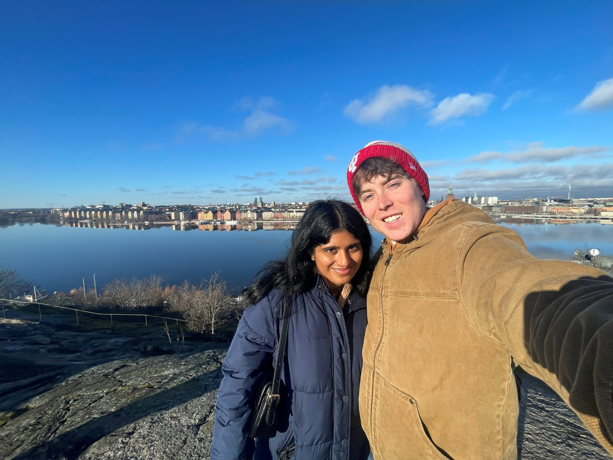
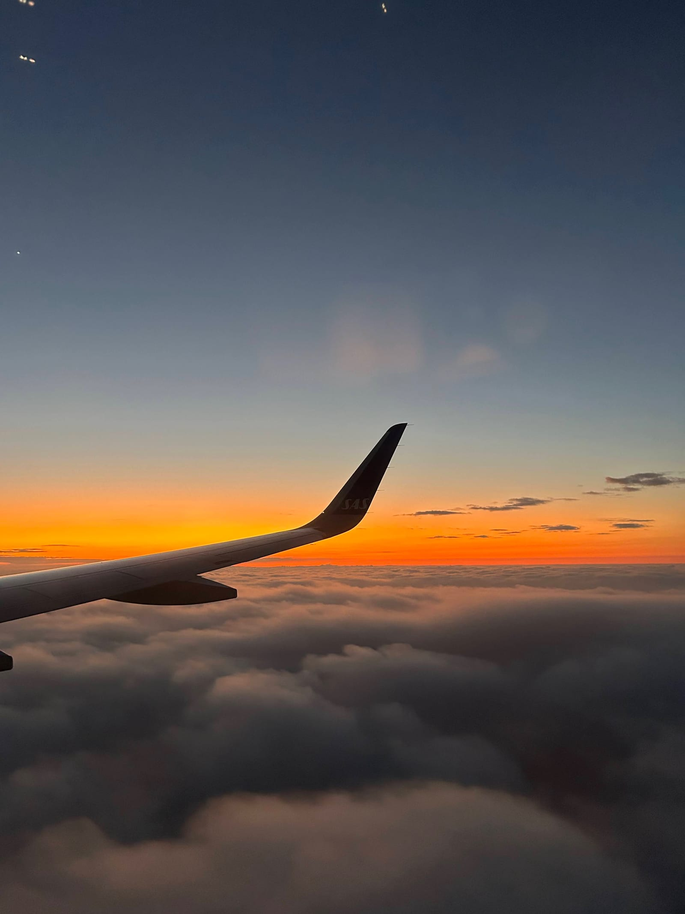
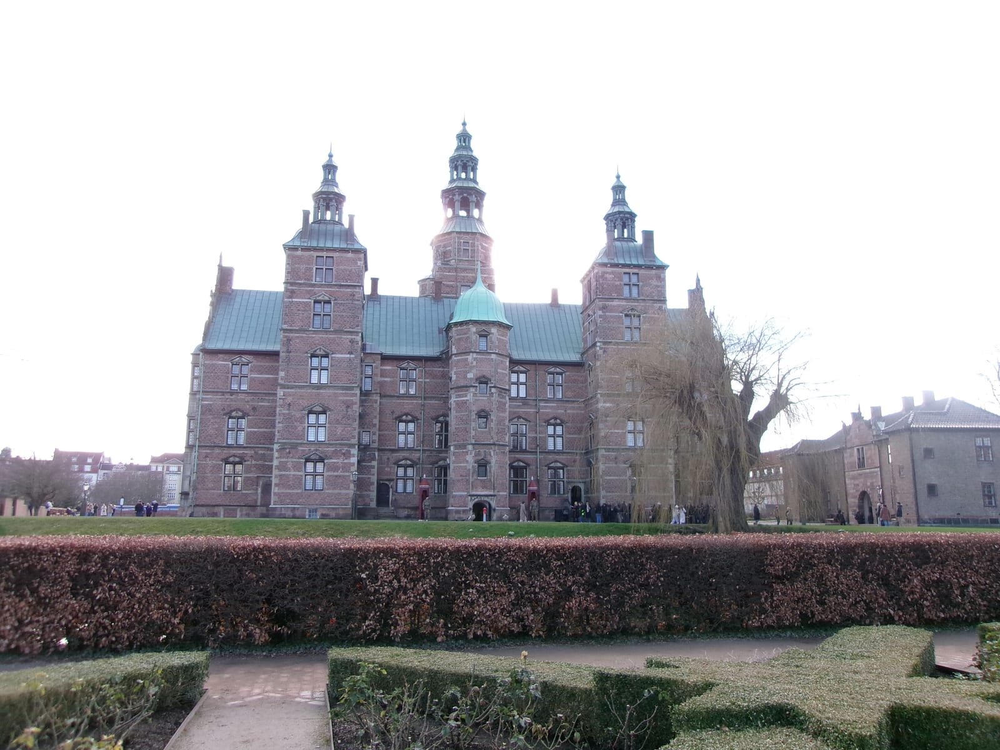
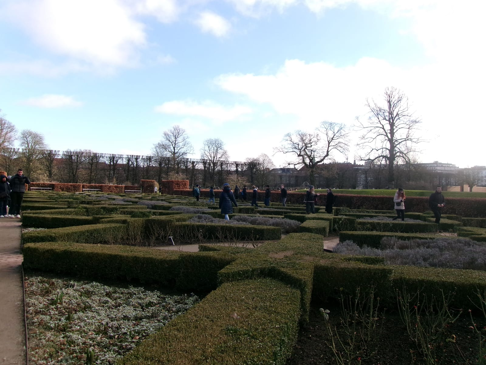
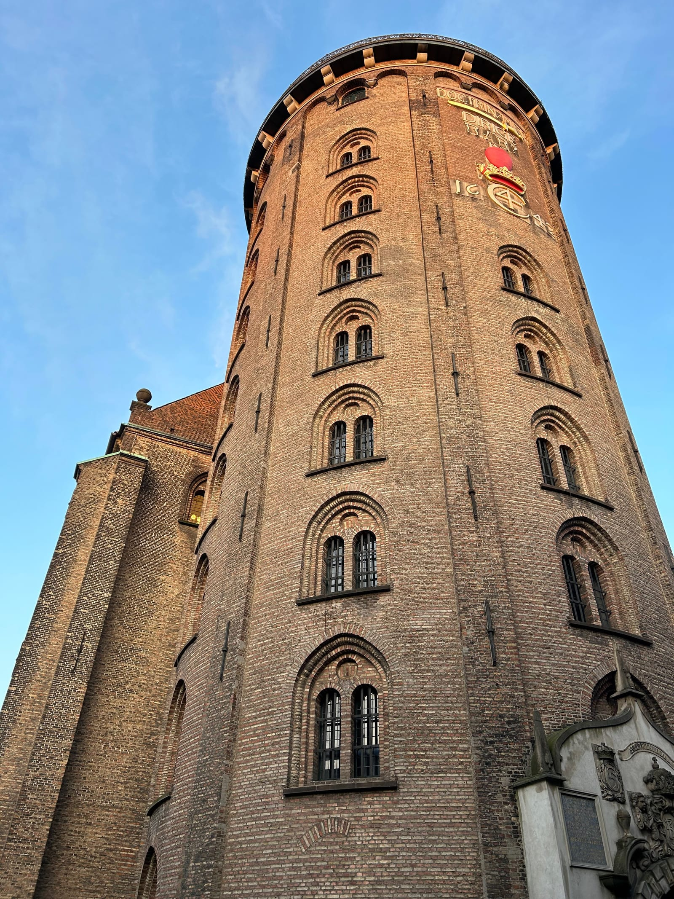
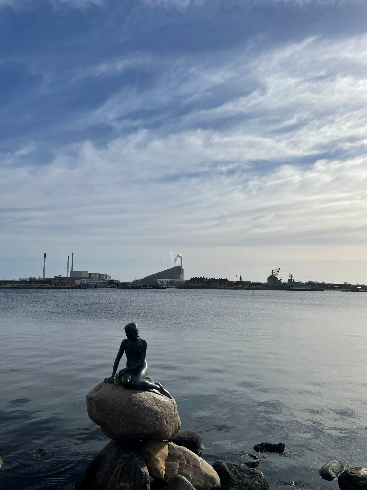
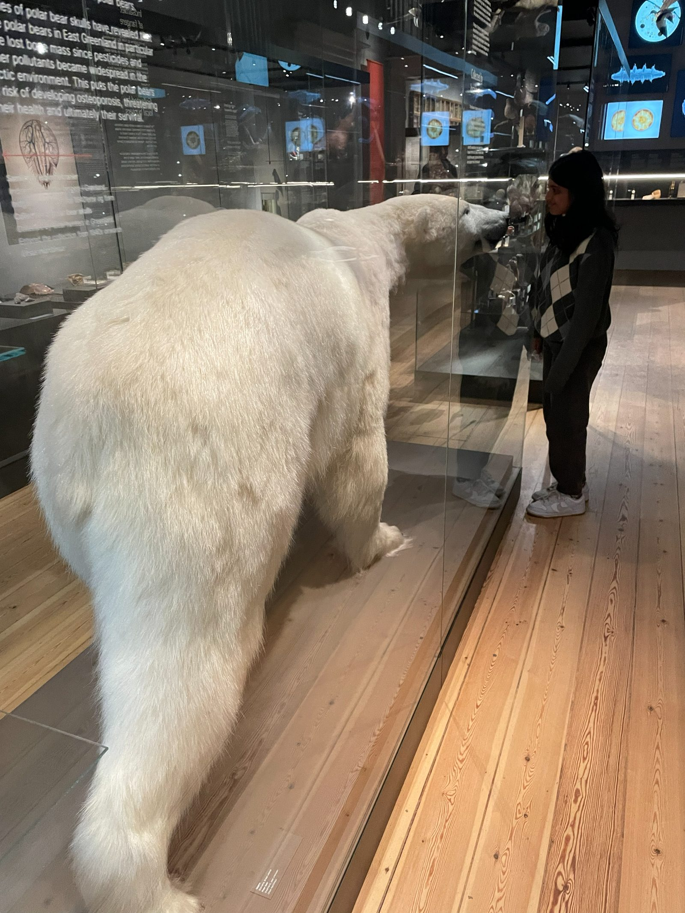

STOCKHOLM-COPENHAGEN
Thursday (Travel)
- Plane took off only 20 min late
- Landed and took the bus to central station before walking to Airbnb
- We unlocked the door and there were people inside who were just as confused as we were

- Once they were out it was 1am and we went to bed
Friday (Stockholm)
- Up at 9 something and left around 10 to Vasa Museum
-
1 / 2
- Walked to Skansen
-
1 / 2
- Took an old timey tram to Bla Dorren for lunch
-
1 / 2
- Walked to Skinnarviksberget for a view over the river of the city

- Took a train back to our bags/souvenir shop and then to the bus to the airport

- Landed and took transport to our hostel, checked in and went to bed
Saturday (Copenhagen)
- Woke up and went to Buka Bakery
- I had a really good orange cinnamon roll and Mahathi loved her chocolate and berries croissant
- Met our free walking tour group at the city hall square
- Walked back to the hostel to recharge phones and drink water before going out for the rest of the day
- Walked to a place Martin recommended but they were fully reserved for lunch
- We audibled and went to a chain that he recommended for Smørrebrød called Hallernes
- It was good we both had Potato ones
- This guy in an electric wheelchair thing gave us honey mustard because Hallernes doesn't have it and apparently it's how ur supposed to eat the potato Smørrebrød
- Walked to Hart bakery and got a cinnamon twist and a cheesecake
- Walked to Rosenborg Slot

- Walked around the Botanical Gardens near Rosenborg for a while

- Went to the Palm House where they had a bunch of plants from all over the world like palm trees, Lily pads, cacti, and even a butterfly room
-
1 / 2
- Walked to the Round Tower and watched the beginning of the sunset

- Went to Pico Pizza for dinner
- Good pizza and crust dip, had to sit outside but they had heaters and blankets which was nice
- It was far away in a residential neighborhood which was a nice change from we had been doing
- Went to Skovbar for drinks after dinner
- Cheapest drinks we could find in town and it was cool
- Very goth and emo themed bar but the bartenders were super nice
- Everyone there kind of made us feel out of place when we walked in but that crowd left after about 30 minutes and it was all normal people after that
- Planned out our next day while here
- Went home and showered before bed
Sunday (Copenhagen)
- Got up at 9 something and went to Juno the Bakery
- Really long line we probably waited 20 minutes but the food was good
- We had a sesame bun with cheese and butter, a cardomom bun, and black currant pastry that were all great but Mahathi said her black currant pastry was the best pastry she's ever had
- Saw the Mermaid statue, not as cool as it seems

- Went to the Natural History Museum

- Saw the Royal Garden, kind of small for a royal garden
- Royal Library was next door but the cool part was closed on Sundays so Mahathi took a nap on a comfortable lobby bench/bed
- Got our bags and went to the airport
- Lounge hopped for the 2 hours before our 7:25 flight and landed early at about 8:15, home at 9:20
- Talked with some Americans we met on the tour who live in Frankfurt, the husbands are stationed there